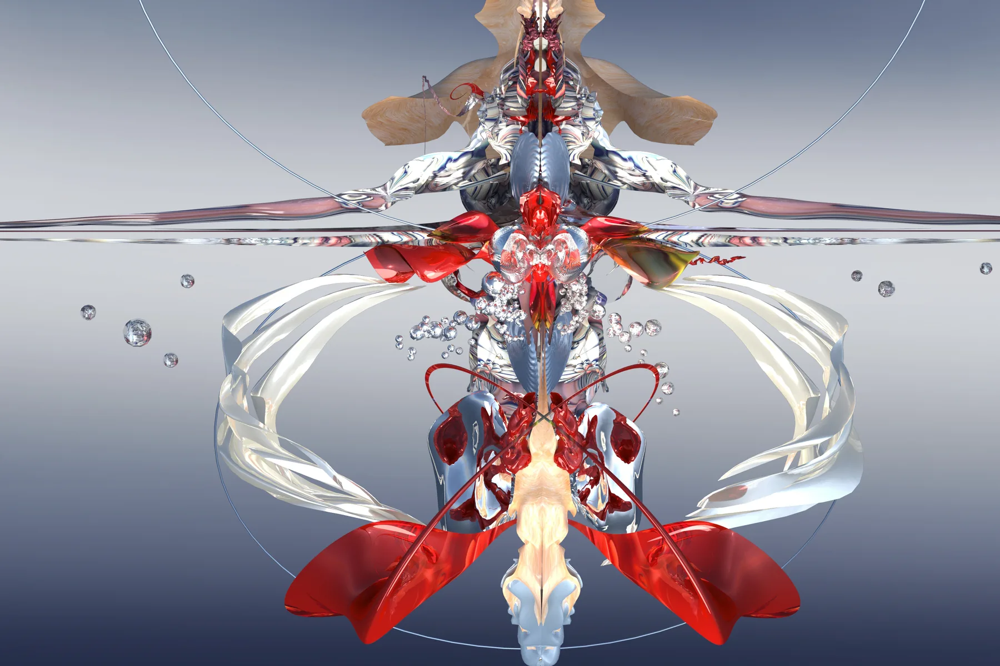
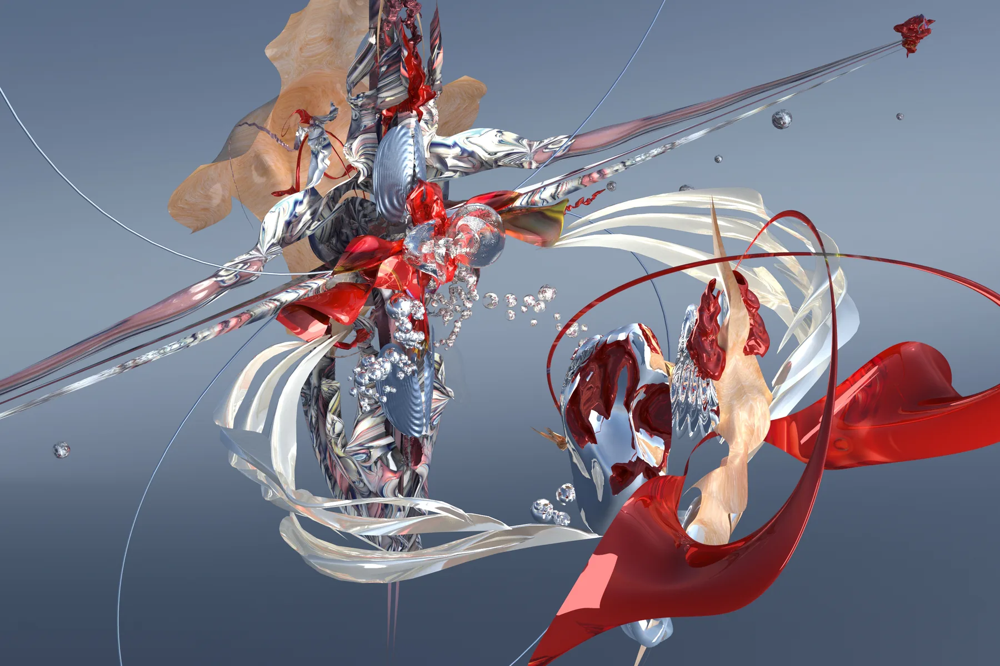
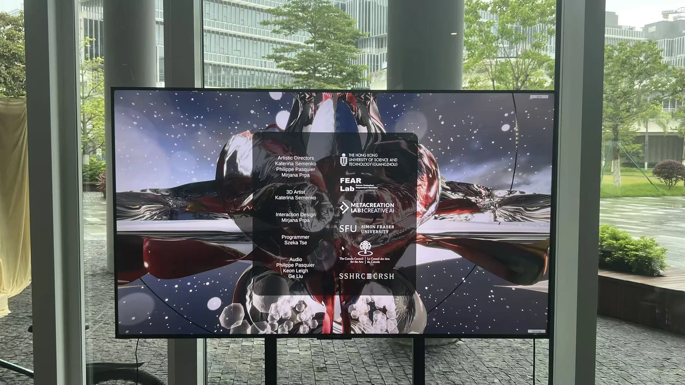
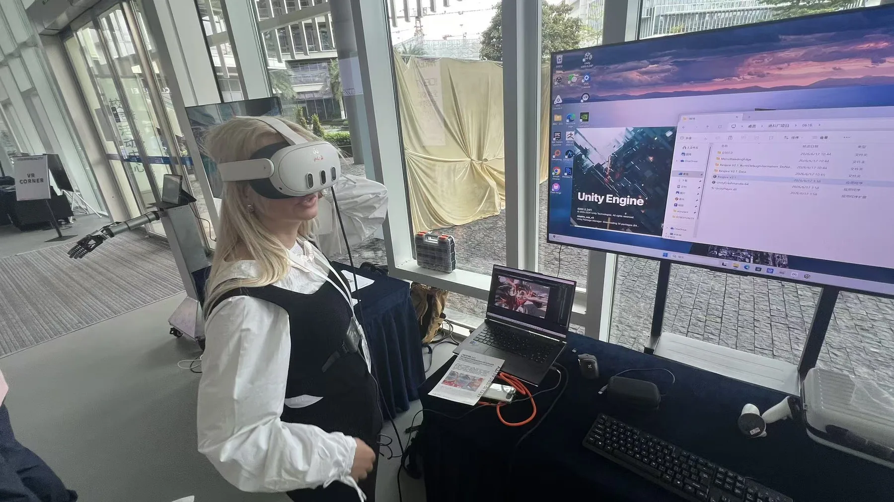
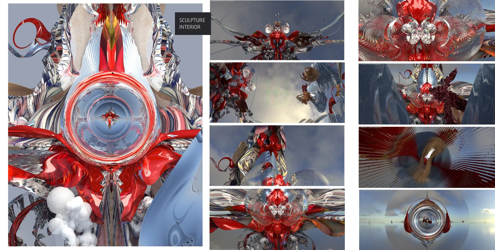
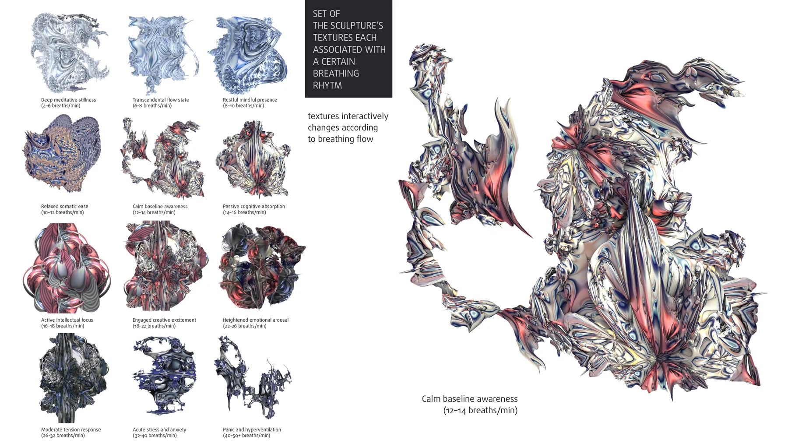
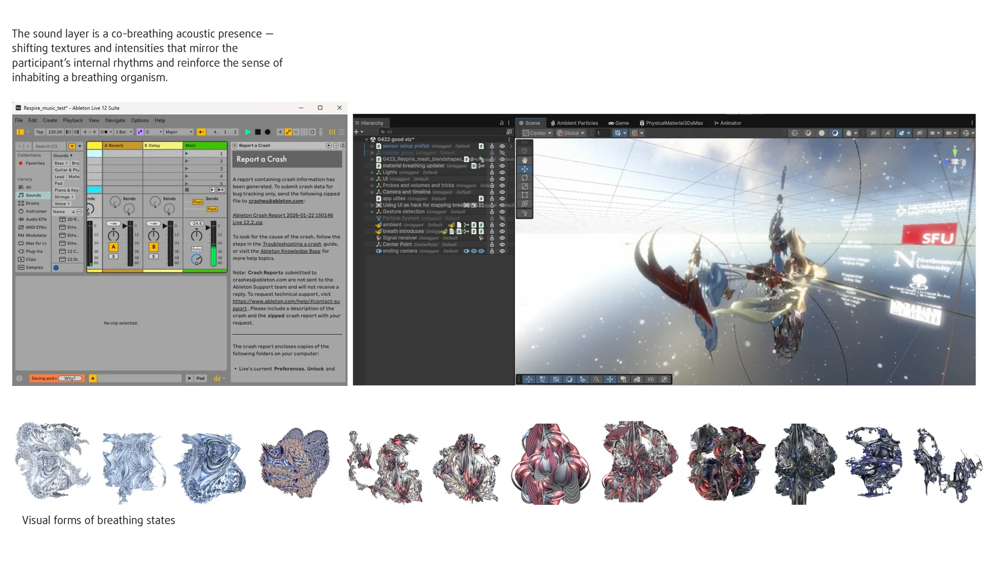
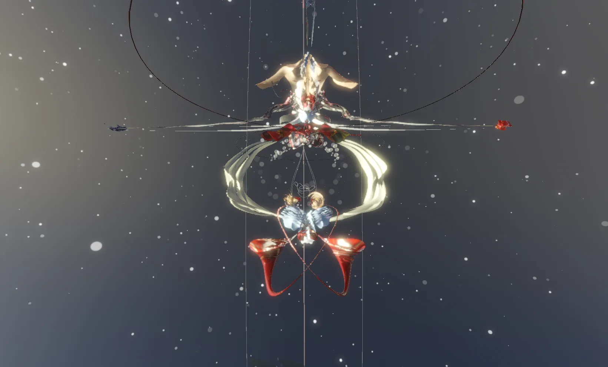
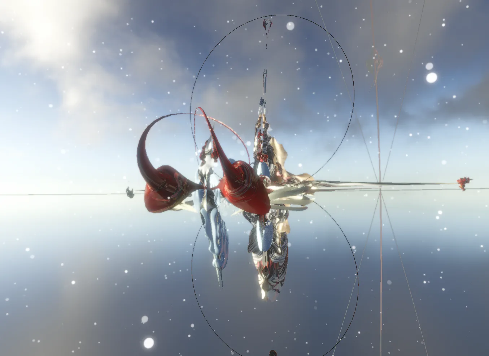

Respire 2.0
Immersive VR artwork mapping live breathing data into light, motion, and a responsive organic sculpture.
Project Overview
Respire 2.0 is an immersive interactive VR artwork developed during my Research Assistant work at HKUST(GZ). The piece connects digital sculpture with bodily rhythm: a live respiratory belt captures the visitor's breathing, while a 3D organic form responds through synchronized light, motion, and spatial atmosphere.
Embodied Interaction
The work turns an invisible physiological process into a visible feedback loop. As the user inhales and exhales, the sculpture appears to awaken, making breathing feel shared between the body and the virtual environment.
Technical System
The project combines Unity 6000.0.43f1, URP, Python 3.10, a Vernier Go Direct Respiratory Belt, and a Unity/Python sensor interface package. I worked on the Unity VR experience, sensor-driven interaction mapping, scene integration, lighting behavior, and real-time feedback logic for the Respire URP project.
Research and Exhibition Value
By translating breathing into an audiovisual sculpture, Respire 2.0 explores the boundary between inner self, digital embodiment, and meditative connection. The project sits between interactive art, physiological sensing, and immersive installation design.
Gallery
Visual studies, Unity captures, exhibition documentation, and interaction design materials from Respire 2.0.








